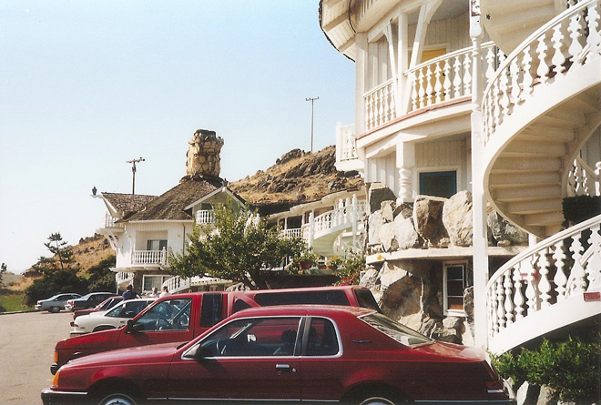
Described as "the tackiest motel in the world", The Madonna Inn opened for business in 1958 and quickly became a landmark on the Central Coast of California. It was created by Alex Madonna, a successful construction magnate and entrepreneur, and his wife Phyllis.
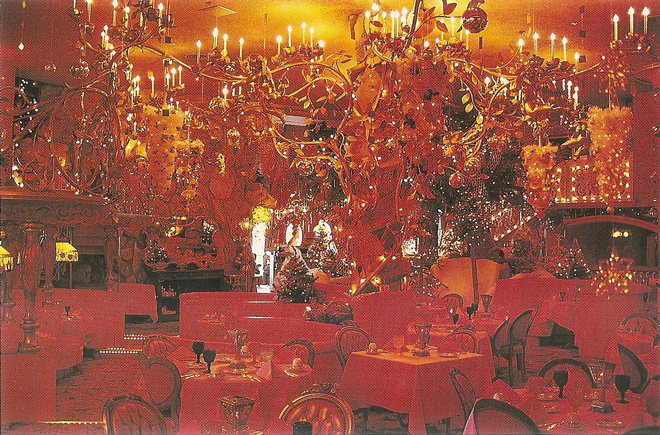
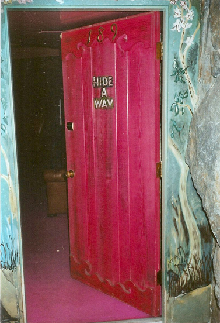
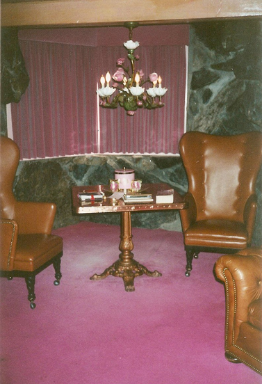
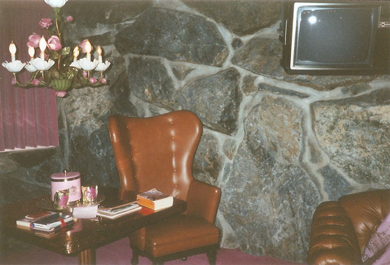
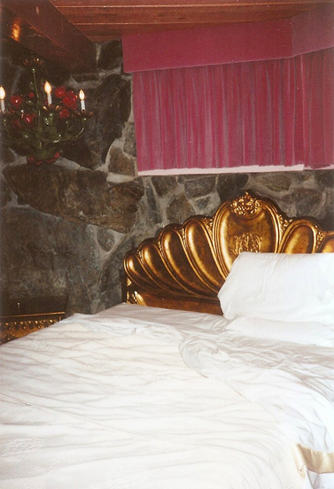
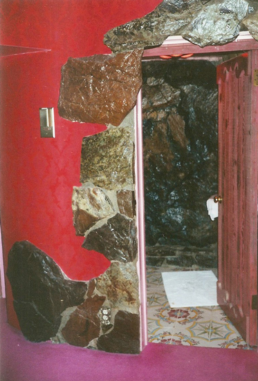
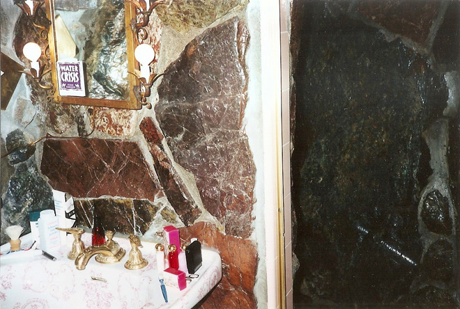
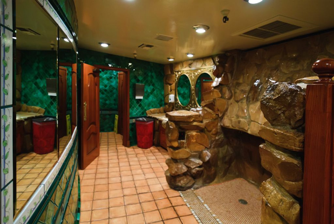
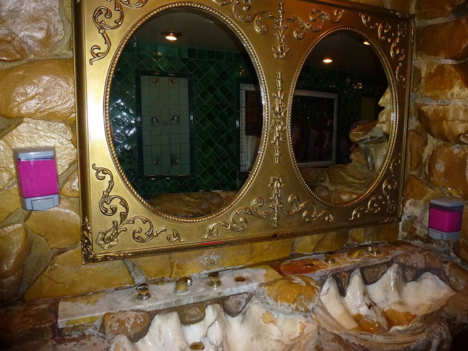
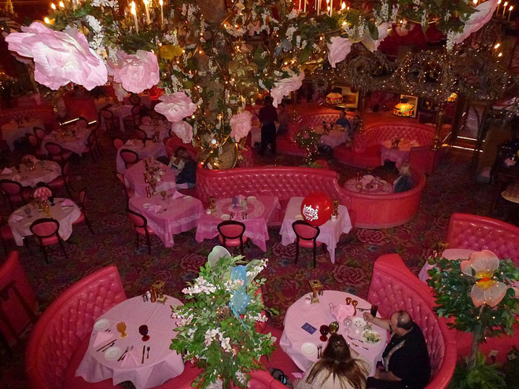
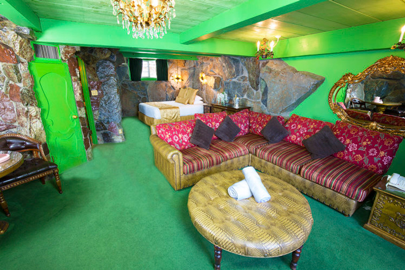
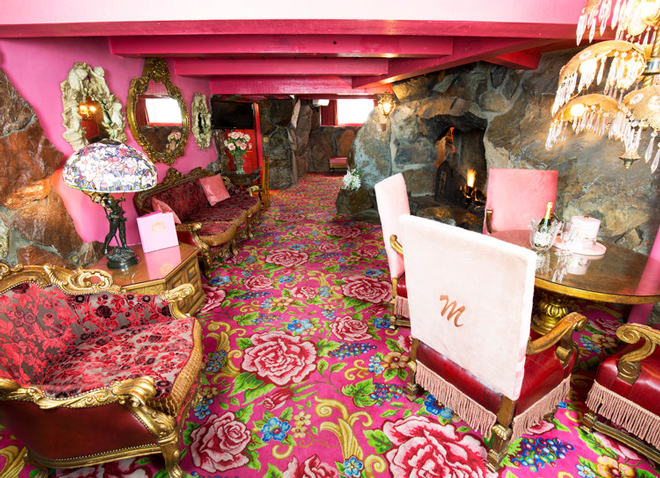
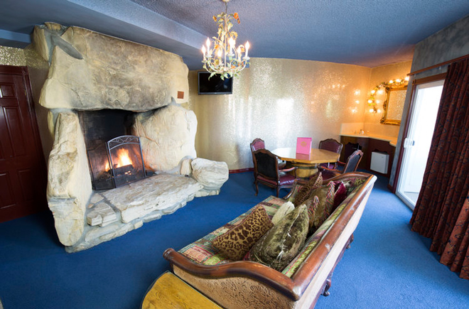
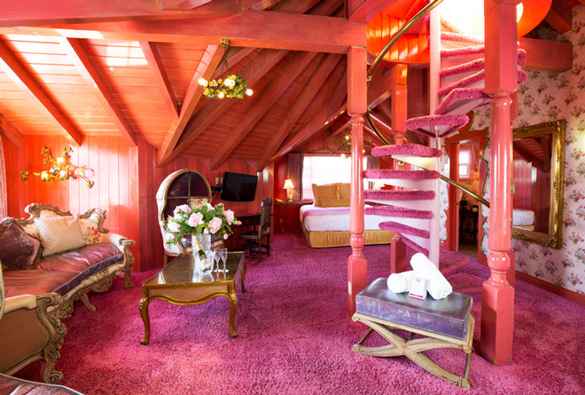
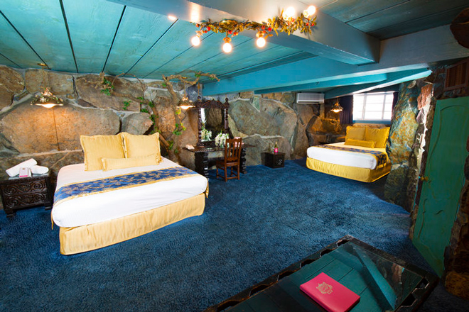
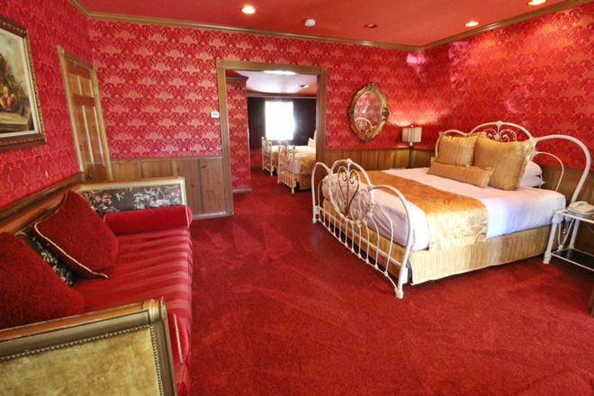